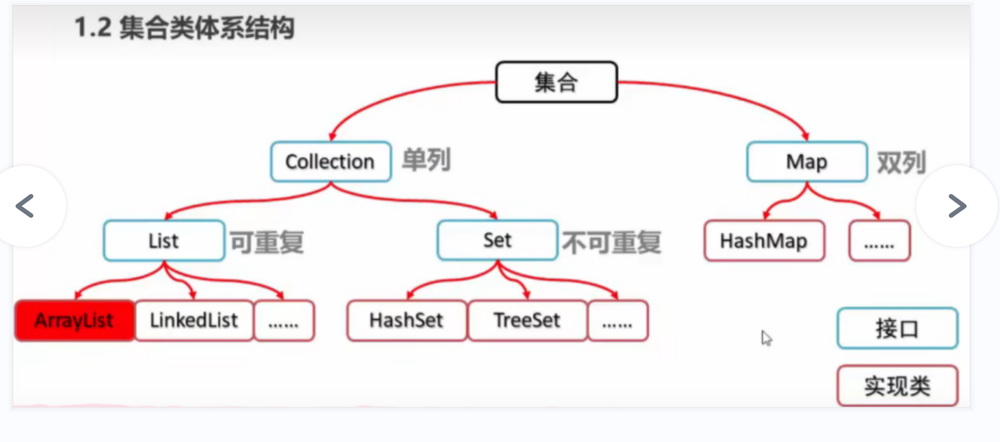

# Collection 集合
# 集合体系结构
集合类的特点
提供一种存储空间可变的存储模型，存储的数据容量可以随时发生改变
集合类的体系图

# 概述和基本使用
Collection 集合概述
是单例集合的顶层接口，它表示一组对象，这些对象也称为 Collection 的元素
JDK 不提供此接口的任何直接实现，它提供更具体的子接口（如 Set 和 List）实现
Collection 集合基本使用
public class CollectionDemo01 {
public static void main(String[] args) {
// 创建 Collection 集合的对象Collection<String> c = new ArrayList<String>();
// 添加元素：boolean add (E e)c.add("hello");
c.add("world");
c.add("java");
// 输出集合对象System.out.println(c);
}}
# 常用方法
| 方法名 | 说明 |
|---|---|
| boolean add(E e) | 添加元素 |
| boolean remove(Object o) | 从集合中移除指定的元素 |
| void clear() | 清空集合中的元素 |
| boolean contains(Object o) | 判断集合中是否存在指定的元素 |
| boolean isEmpty() | 判断集合是否为空 |
| int size() | 集合的长度，也就是集合中元素的个数 |
# 遍历
- 迭代器的介绍
- 迭代器，集合的专用遍历方式
- Iterator<E> iterator ()：返回此集合中元素的迭代器，通过集合的 iterator () 方法得到
- 迭代器是通过集合的 iterator () 方法得到的，所以我们说它是依赖于集合而存在的
- Collection 集合的遍历
public class IteratorDemo { | |
public static void main(String[] args) { | |
// 创建集合对象 | |
Collection<String> c = new ArrayList<>(); | |
// 添加元素 | |
c.add("hello"); | |
c.add("world"); | |
c.add("java"); | |
c.add("javaee"); | |
//Iterator<E> iterator ()：返回此集合中元素的迭代器，通过集合的 iterator () 方法得到 | |
Iterator<String> it = c.iterator(); | |
// 用 while 循环改进元素的判断和获取 | |
while (it.hasNext()) { | |
String s = it.next(); | |
System.out.println(s); | |
} | |
} | |
} |
# 集合使用步骤图解
- 使用步骤
# 存储学生对象并遍历
案例需求
创建一个存储学生对象的集合，存储 3 个学生对象，使用程序实现在控制台遍历该集合
代码实现
- 学生类
public class Student {
private String name;
private int age;
public Student() {
}public Student(String name, int age) {
this.name = name;
this.age = age;
}public String getName() {
return name;
}public void setName(String name) {
this.name = name;
}public int getAge() {
return age;
}public void setAge(int age) {
this.age = age;
}}- 测试类
public class CollectionDemo {
public static void main(String[] args) {
// 创建 Collection 集合对象Collection<Student> c = new ArrayList<Student>();
// 创建学生对象Student s1 = new Student("林青霞", 30);
Student s2 = new Student("张曼玉", 35);
Student s3 = new Student("王祖贤", 33);
// 把学生添加到集合c.add(s1);
c.add(s2);
c.add(s3);
// 遍历集合 (迭代器方式)Iterator<Student> it = c.iterator();
while (it.hasNext()) {
Student s = it.next();
System.out.println(s.getName() + "," + s.getAge());
}}}
# List 集合
# 概述和特点
- List 集合概述
- 有序集合 (也称为序列)，用户可以精确控制列表中每个元素的插入位置。用户可以通过整数索引访问元素，并搜索列表中的元素
- 与 Set 集合不同，列表通常允许重复的元素
- List 集合特点
- 有索引
- 可以存储重复元素
- 元素存取有序
# 特有方法
| 方法名 | 描述 |
|---|---|
| void add(int index,E element) | 在此集合中的指定位置插入指定的元素 |
| E remove(int index) | 删除指定索引处的元素，返回被删除的元素 |
| E set(int index,E element) | 修改指定索引处的元素，返回被修改的元素 |
| E get(int index) | 返回指定索引处的元素 |
# 存储学生对象并遍历
案例需求
创建一个存储学生对象的集合，存储 3 个学生对象，使用程序实现在控制台遍历该集合
代码实现
学生类
public class Student {
private String name;
private int age;
public Student() {
}public Student(String name, int age) {
this.name = name;
this.age = age;
}public String getName() {
return name;
}public void setName(String name) {
this.name = name;
}public int getAge() {
return age;
}public void setAge(int age) {
this.age = age;
}}测试类
public class ListDemo {
public static void main(String[] args) {
// 创建 List 集合对象List<Student> list = new ArrayList<Student>();
// 创建学生对象Student s1 = new Student("林青霞", 30);
Student s2 = new Student("张曼玉", 35);
Student s3 = new Student("王祖贤", 33);
// 把学生添加到集合list.add(s1);
list.add(s2);
list.add(s3);
// 迭代器方式Iterator<Student> it = list.iterator();
while (it.hasNext()) {
Student s = it.next();
System.out.println(s.getName() + "," + s.getAge());
}System.out.println("--------");
//for 循环方式for(int i=0; i<list.size(); i++) {
Student s = list.get(i);
System.out.println(s.getName() + "," + s.getAge());
}}}
# 并发修改异常
出现的原因
迭代器遍历的过程中，通过集合对象修改了集合中的元素，造成了迭代器获取元素中判断预期修改值和实际修改值不一致，则会出现：ConcurrentModificationException
解决的方案
用 for 循环遍历，然后用集合对象做对应的操作即可
示例代码
public class ListDemo {
public static void main(String[] args) {
// 创建集合对象List<String> list = new ArrayList<String>();
// 添加元素list.add("hello");
list.add("world");
list.add("java");
// 遍历集合，得到每一个元素，看有没有 "world" 这个元素，如果有，我就添加一个 "javaee" 元素，请写代码实现// Iterator<String> it = list.iterator();// while (it.hasNext()) {// String s = it.next();// if(s.equals("world")) {// list.add("javaee");// }// }for(int i=0; i<list.size(); i++) {
String s = list.get(i);
if(s.equals("world")) {
list.add("javaee");
}}// 输出集合对象System.out.println(list);
}}
# 列表迭代器
ListIterator 介绍
- 通过 List 集合的 listIterator () 方法得到，所以说它是 List 集合特有的迭代器
- 用于允许程序员沿任一方向遍历的列表迭代器，在迭代期间修改列表，并获取列表中迭代器的当前位置
示例代码
public class ListIteratorDemo {
public static void main(String[] args) {
// 创建集合对象List<String> list = new ArrayList<String>();
// 添加元素list.add("hello");
list.add("world");
list.add("java");
// 获取列表迭代器ListIterator<String> lit = list.listIterator();
while (lit.hasNext()) {
String s = lit.next();
if(s.equals("world")) {
lit.add("javaee");
}}System.out.println(list);
}}
# 增强 for 循环
定义格式
for(元素数据类型 变量名 : 数组/集合对象名) {
循环体;}示例代码
public class ForDemo {
public static void main(String[] args) {
int[] arr = {1,2,3,4,5};
for(int i : arr) {
System.out.println(i);
}System.out.println("--------");
String[] strArray = {"hello","world","java"};
for(String s : strArray) {
System.out.println(s);
}System.out.println("--------");
List<String> list = new ArrayList<String>();
list.add("hello");
list.add("world");
list.add("java");
for(String s : list) {
System.out.println(s);
}System.out.println("--------");
// 内部原理是一个 Iterator 迭代器/*for(String s : list) {if(s.equals("world")) {list.add("javaee"); //ConcurrentModificationException}
}
*/
}}
# 存储学生对象三种方式遍历
案例需求
创建一个存储学生对象的集合，存储 3 个学生对象，使用程序实现在控制台遍历该集合
代码实现
学生类
public class Student {
private String name;
private int age;
public Student() {
}public Student(String name, int age) {
this.name = name;
this.age = age;
}public String getName() {
return name;
}public void setName(String name) {
this.name = name;
}public int getAge() {
return age;
}public void setAge(int age) {
this.age = age;
}}测试类
public class ListDemo {
public static void main(String[] args) {
// 创建 List 集合对象List<Student> list = new ArrayList<Student>();
// 创建学生对象Student s1 = new Student("林青霞", 30);
Student s2 = new Student("张曼玉", 35);
Student s3 = new Student("王祖贤", 33);
// 把学生添加到集合list.add(s1);
list.add(s2);
list.add(s3);
// 迭代器：集合特有的遍历方式Iterator<Student> it = list.iterator();
while (it.hasNext()) {
Student s = it.next();
System.out.println(s.getName()+","+s.getAge());
}System.out.println("--------");
// 普通 for：带有索引的遍历方式for(int i=0; i<list.size(); i++) {
Student s = list.get(i);
System.out.println(s.getName()+","+s.getAge());
}System.out.println("--------");
// 增强 for：最方便的遍历方式for(Student s : list) {
System.out.println(s.getName()+","+s.getAge());
}}}
# 数据结构
# 栈和队列
栈结构
先进后出
队列结构
先进先出
# 数据结构之数组和链表
数组结构
查询快、增删慢
队列结构
查询慢、增删快
# List 集合的实现类
# List 集合子类的特点
ArrayList 集合
底层是数组结构实现，查询快、增删慢
LinkedList 集合
底层是链表结构实现，查询慢、增删快
# ArrayList 集合存储学生对象三种方式遍历
案例需求
创建一个存储学生对象的集合，存储 3 个学生对象，使用程序实现在控制台遍历该集合
代码实现
学生类
public class Student {
private String name;
private int age;
public Student() {
}public Student(String name, int age) {
this.name = name;
this.age = age;
}public String getName() {
return name;
}public void setName(String name) {
this.name = name;
}public int getAge() {
return age;
}public void setAge(int age) {
this.age = age;
}}测试类
public class ArrayListDemo {
public static void main(String[] args) {
// 创建 ArrayList 集合对象ArrayList<Student> array = new ArrayList<Student>();
// 创建学生对象Student s1 = new Student("林青霞", 30);
Student s2 = new Student("张曼玉", 35);
Student s3 = new Student("王祖贤", 33);
// 把学生添加到集合array.add(s1);
array.add(s2);
array.add(s3);
// 迭代器：集合特有的遍历方式Iterator<Student> it = array.iterator();
while (it.hasNext()) {
Student s = it.next();
System.out.println(s.getName() + "," + s.getAge());
}System.out.println("--------");
// 普通 for：带有索引的遍历方式for(int i=0; i<array.size(); i++) {
Student s = array.get(i);
System.out.println(s.getName() + "," + s.getAge());
}System.out.println("--------");
// 增强 for：最方便的遍历方式for(Student s : array) {
System.out.println(s.getName() + "," + s.getAge());
}}}
# LinkedList 集合特有功能
特有方法
方法名 说明 public void addFirst(E e) 在该列表开头插入指定的元素 public void addLast(E e) 将指定的元素追加到此列表的末尾 public E getFirst() 返回此列表中的第一个元素 public E getLast() 返回此列表中的最后一个元素 public E removeFirst() 从此列表中删除并返回第一个元素 public E removeLast() 从此列表中删除并返回最后一个元素
# Set 集合
# 概述和特点
- Set 集合的特点
- 元素存取无序
- 没有索引、只能通过迭代器或增强 for 循环遍历
- 不能存储重复元素
- Set 集合的基本使用
public class SetDemo { | |
public static void main(String[] args) { | |
// 创建集合对象 | |
Set<String> set = new HashSet<String>(); | |
// 添加元素 | |
set.add("hello"); | |
set.add("world"); | |
set.add("java"); | |
// 不包含重复元素的集合 | |
set.add("world"); | |
// 遍历 | |
for(String s : set) { | |
System.out.println(s); | |
} | |
} | |
} |
# 哈希值
哈希值简介
是 JDK 根据对象的地址或者字符串或者数字算出来的 int 类型的数值
如何获取哈希值
Object 类中的 public int hashCode ()：返回对象的哈希码值
哈希值的特点
- 同一个对象多次调用 hashCode () 方法返回的哈希值是相同的
- 默认情况下，不同对象的哈希值是不同的。而重写 hashCode () 方法，可以实现让不同对象的哈希值相同
获取哈希值的代码
- 学生类
public class Student {
private String name;
private int age;
public Student() {
}public Student(String name, int age) {
this.name = name;
this.age = age;
}public String getName() {
return name;
}public void setName(String name) {
this.name = name;
}public int getAge() {
return age;
}public void setAge(int age) {
this.age = age;
}@Overridepublic int hashCode() {
return 0;
}}- 测试类
public class HashDemo {
public static void main(String[] args) {
// 创建学生对象Student s1 = new Student("林青霞",30);
// 同一个对象多次调用 hashCode () 方法返回的哈希值是相同的System.out.println(s1.hashCode()); //1060830840
System.out.println(s1.hashCode()); //1060830840
System.out.println("--------");
Student s2 = new Student("林青霞",30);
// 默认情况下，不同对象的哈希值是不相同的// 通过方法重写，可以实现不同对象的哈希值是相同的System.out.println(s2.hashCode()); //2137211482
System.out.println("--------");
System.out.println("hello".hashCode()); //99162322
System.out.println("world".hashCode()); //113318802
System.out.println("java".hashCode()); //3254818
System.out.println("world".hashCode()); //113318802
System.out.println("--------");
System.out.println("重地".hashCode()); //1179395
System.out.println("通话".hashCode()); //1179395
}}
# HashSet 集合概述和特点
HashSet 集合的特点
- 底层数据结构是哈希表
- 对集合的迭代顺序不作任何保证，也就是说不保证存储和取出的元素顺序一致
- 没有带索引的方法，所以不能使用普通 for 循环遍历
- 由于是 Set 集合，所以是不包含重复元素的集合
HashSet 集合的基本使用
public class HashSetDemo01 {
public static void main(String[] args) {
// 创建集合对象HashSet<String> hs = new HashSet<String>();
// 添加元素hs.add("hello");
hs.add("world");
hs.add("java");
hs.add("world");
// 遍历for(String s : hs) {
System.out.println(s);
}}}
# HashSet 集合保证元素唯一性源码分析
HashSet 集合保证元素唯一性的原理
1. 根据对象的哈希值计算存储位置
如果当前位置没有元素则直接存入
如果当前位置有元素存在，则进入第二步
2. 当前元素的元素和已经存在的元素比较哈希值
如果哈希值不同，则将当前元素进行存储
如果哈希值相同，则进入第三步
3. 通过 equals () 方法比较两个元素的内容
如果内容不相同，则将当前元素进行存储
如果内容相同，则不存储当前元素
HashSet 集合保证元素唯一性的图解


# 常见数据结构之哈希表【理解】

# HashSet 集合存储学生对象并遍历
案例需求
- 创建一个存储学生对象的集合，存储多个学生对象，使用程序实现在控制台遍历该集合
- 要求：学生对象的成员变量值相同，我们就认为是同一个对象
代码实现
学生类
public class Student {
private String name;
private int age;
public Student() {
}public Student(String name, int age) {
this.name = name;
this.age = age;
}public String getName() {
return name;
}public void setName(String name) {
this.name = name;
}public int getAge() {
return age;
}public void setAge(int age) {
this.age = age;
}@Overridepublic boolean equals(Object o) {
if (this == o) return true;
if (o == null || getClass() != o.getClass()) return false;
Student student = (Student) o;
if (age != student.age) return false;
return name != null ? name.equals(student.name) : student.name == null;
}@Overridepublic int hashCode() {
int result = name != null ? name.hashCode() : 0;
result = 31 * result + age;
return result;
}}测试类
public class HashSetDemo02 {
public static void main(String[] args) {
// 创建 HashSet 集合对象HashSet<Student> hs = new HashSet<Student>();
// 创建学生对象Student s1 = new Student("林青霞", 30);
Student s2 = new Student("张曼玉", 35);
Student s3 = new Student("王祖贤", 33);
Student s4 = new Student("王祖贤", 33);
// 把学生添加到集合hs.add(s1);
hs.add(s2);
hs.add(s3);
hs.add(s4);
// 遍历集合 (增强 for)for (Student s : hs) {
System.out.println(s.getName() + "," + s.getAge());
}}}
# LinkedHashSet 集合概述和特点
LinkedHashSet 集合特点
- 哈希表和链表实现的 Set 接口，具有可预测的迭代次序
- 由链表保证元素有序，也就是说元素的存储和取出顺序是一致的
- 由哈希表保证元素唯一，也就是说没有重复的元素
LinkedHashSet 集合基本使用
public class LinkedHashSetDemo {
public static void main(String[] args) {
// 创建集合对象LinkedHashSet<String> linkedHashSet = new LinkedHashSet<String>();
// 添加元素linkedHashSet.add("hello");
linkedHashSet.add("world");
linkedHashSet.add("java");
linkedHashSet.add("world");
// 遍历集合for(String s : linkedHashSet) {
System.out.println(s);
}}}
# Set 集合排序
# TreeSet 集合概述和特点
TreeSet 集合概述
- 元素有序，可以按照一定的规则进行排序，具体排序方式取决于构造方法
- TreeSet ()：根据其元素的自然排序进行排序
- TreeSet (Comparator comparator) ：根据指定的比较器进行排序
- 没有带索引的方法，所以不能使用普通 for 循环遍历
- 由于是 Set 集合，所以不包含重复元素的集合
- 元素有序，可以按照一定的规则进行排序，具体排序方式取决于构造方法
TreeSet 集合基本使用
public class TreeSetDemo01 {
public static void main(String[] args) {
// 创建集合对象TreeSet<Integer> ts = new TreeSet<Integer>();
// 添加元素ts.add(10);
ts.add(40);
ts.add(30);
ts.add(50);
ts.add(20);
ts.add(30);
// 遍历集合for(Integer i : ts) {
System.out.println(i);
}}}
# 自然排序 Comparable 的使用
案例需求
- 存储学生对象并遍历，创建 TreeSet 集合使用无参构造方法
- 要求：按照年龄从小到大排序，年龄相同时，按照姓名的字母顺序排序
实现步骤
- 用 TreeSet 集合存储自定义对象，无参构造方法使用的是自然排序对元素进行排序的
- 自然排序，就是让元素所属的类实现 Comparable 接口，重写 compareTo (T o) 方法
- 重写方法时，一定要注意排序规则必须按照要求的主要条件和次要条件来写
代码实现
学生类
public class Student implements Comparable<Student> {
private String name;
private int age;
public Student() {
}public Student(String name, int age) {
this.name = name;
this.age = age;
}public String getName() {
return name;
}public void setName(String name) {
this.name = name;
}public int getAge() {
return age;
}public void setAge(int age) {
this.age = age;
}@Overridepublic int compareTo(Student s) {
// return 0;// return 1;// return -1;// 按照年龄从小到大排序int num = this.age - s.age;
// int num = s.age - this.age;// 年龄相同时，按照姓名的字母顺序排序int num2 = num==0?this.name.compareTo(s.name):num;
return num2;
}}测试类
public class TreeSetDemo02 {
public static void main(String[] args) {
// 创建集合对象TreeSet<Student> ts = new TreeSet<Student>();
// 创建学生对象Student s1 = new Student("xishi", 29);
Student s2 = new Student("wangzhaojun", 28);
Student s3 = new Student("diaochan", 30);
Student s4 = new Student("yangyuhuan", 33);
Student s5 = new Student("linqingxia",33);
Student s6 = new Student("linqingxia",33);
// 把学生添加到集合ts.add(s1);
ts.add(s2);
ts.add(s3);
ts.add(s4);
ts.add(s5);
ts.add(s6);
// 遍历集合for (Student s : ts) {
System.out.println(s.getName() + "," + s.getAge());
}}}
# 比较器排序 Comparator 的使用
案例需求
- 存储学生对象并遍历，创建 TreeSet 集合使用带参构造方法
- 要求：按照年龄从小到大排序，年龄相同时，按照姓名的字母顺序排序
实现步骤
- 用 TreeSet 集合存储自定义对象，带参构造方法使用的是比较器排序对元素进行排序的
- 比较器排序，就是让集合构造方法接收 Comparator 的实现类对象，重写 compare (T o1,T o2) 方法
- 重写方法时，一定要注意排序规则必须按照要求的主要条件和次要条件来写
代码实现
学生类
public class Student {
private String name;
private int age;
public Student() {
}public Student(String name, int age) {
this.name = name;
this.age = age;
}public String getName() {
return name;
}public void setName(String name) {
this.name = name;
}public int getAge() {
return age;
}public void setAge(int age) {
this.age = age;
}}测试类
public class TreeSetDemo {
public static void main(String[] args) {
// 创建集合对象TreeSet<Student> ts = new TreeSet<Student>(new Comparator<Student>() {
@Overridepublic int compare(Student s1, Student s2) {
//this.age - s.age//s1,s2int num = s1.getAge() - s2.getAge();
int num2 = num == 0 ? s1.getName().compareTo(s2.getName()) : num;
return num2;
}});
// 创建学生对象Student s1 = new Student("xishi", 29);
Student s2 = new Student("wangzhaojun", 28);
Student s3 = new Student("diaochan", 30);
Student s4 = new Student("yangyuhuan", 33);
Student s5 = new Student("linqingxia",33);
Student s6 = new Student("linqingxia",33);
// 把学生添加到集合ts.add(s1);
ts.add(s2);
ts.add(s3);
ts.add(s4);
ts.add(s5);
ts.add(s6);
// 遍历集合for (Student s : ts) {
System.out.println(s.getName() + "," + s.getAge());
}}}
# 成绩排序案例
案例需求
- 用 TreeSet 集合存储多个学生信息 (姓名，语文成绩，数学成绩)，并遍历该集合
- 要求：按照总分从高到低出现
代码实现
学生类
public class Student {
private String name;
private int chinese;
private int math;
public Student() {
}public Student(String name, int chinese, int math) {
this.name = name;
this.chinese = chinese;
this.math = math;
}public String getName() {
return name;
}public void setName(String name) {
this.name = name;
}public int getChinese() {
return chinese;
}public void setChinese(int chinese) {
this.chinese = chinese;
}public int getMath() {
return math;
}public void setMath(int math) {
this.math = math;
}public int getSum() {
return this.chinese + this.math;
}}测试类
public class TreeSetDemo {
public static void main(String[] args) {
// 创建 TreeSet 集合对象，通过比较器排序进行排序TreeSet<Student> ts = new TreeSet<Student>(new Comparator<Student>() {
@Overridepublic int compare(Student s1, Student s2) {
// int num = (s2.getChinese()+s2.getMath())-(s1.getChinese()+s1.getMath());// 主要条件int num = s2.getSum() - s1.getSum();
// 次要条件int num2 = num == 0 ? s1.getChinese() - s2.getChinese() : num;
int num3 = num2 == 0 ? s1.getName().compareTo(s2.getName()) : num2;
return num3;
}});
// 创建学生对象Student s1 = new Student("林青霞", 98, 100);
Student s2 = new Student("张曼玉", 95, 95);
Student s3 = new Student("王祖贤", 100, 93);
Student s4 = new Student("柳岩", 100, 97);
Student s5 = new Student("风清扬", 98, 98);
Student s6 = new Student("左冷禅", 97, 99);
// Student s7 = new Student ("左冷禅", 97, 99);Student s7 = new Student("赵云", 97, 99);
// 把学生对象添加到集合ts.add(s1);
ts.add(s2);
ts.add(s3);
ts.add(s4);
ts.add(s5);
ts.add(s6);
ts.add(s7);
// 遍历集合for (Student s : ts) {
System.out.println(s.getName() + "," + s.getChinese() + "," + s.getMath() + "," + s.getSum());
}}}
# 不重复的随机数案例
案例需求
- 编写一个程序，获取 10 个 1-20 之间的随机数，要求随机数不能重复，并在控制台输出
代码实现
public class SetDemo {
public static void main(String[] args) {
// 创建 Set 集合对象// Set<Integer> set = new HashSet<Integer>();Set<Integer> set = new TreeSet<Integer>();
// 创建随机数对象Random r = new Random();
// 判断集合的长度是不是小于 10while (set.size()<10) {
// 产生一个随机数，添加到集合int number = r.nextInt(20) + 1;
set.add(number);
}// 遍历集合for(Integer i : set) {
System.out.println(i);
}}}
# 泛型
# 概述和好处
泛型概述
是 JDK5 中引入的特性，它提供了编译时类型安全检测机制，该机制允许在编译时检测到非法的类型
它的本质是参数化类型，也就是说所操作的数据类型被指定为一个参数。一提到参数，最熟悉的就是定义方法时有形参，然后调用此方法时传递实参。那么参数化类型怎么理解呢？顾名思义，就是将类型由原来的具体的类型参数化，然后在使用 / 调用时传入具体的类型。这种参数类型可以用在类、方法和接口中，分别被称为泛型类、泛型方法、泛型接口
泛型定义格式
- <类型>：指定一种类型的格式。这里的类型可以看成是形参
- <类型 1, 类型 2…>：指定多种类型的格式，多种类型之间用逗号隔开。这里的类型可以看成是形参
- 将来具体调用时候给定的类型可以看成是实参，并且实参的类型只能是引用数据类型
泛型的好处
- 把运行时期的问题提前到了编译期间
- 避免了强制类型转换
# 泛型类
定义格式
修饰符 class 类名<类型> { }
示例代码
泛型类
public class Generic<T> {
private T t;
public T getT() {
return t;
}public void setT(T t) {
this.t = t;
}}测试类
public class GenericDemo {
public static void main(String[] args) {
Generic<String> g1 = new Generic<String>();
g1.setT("林青霞");
System.out.println(g1.getT());
Generic<Integer> g2 = new Generic<Integer>();
g2.setT(30);
System.out.println(g2.getT());
Generic<Boolean> g3 = new Generic<Boolean>();
g3.setT(true);
System.out.println(g3.getT());
}}
# 泛型方法
定义格式
修饰符 <类型> 返回值类型 方法名(类型 变量名) { }
示例代码
带有泛型方法的类
public class Generic {
public <T> void show(T t) {
System.out.println(t);
}}测试类
public class GenericDemo {
public static void main(String[] args) {
Generic g = new Generic();
g.show("林青霞");
g.show(30);
g.show(true);
g.show(12.34);
}}
# 泛型接口
定义格式
修饰符 interface 接口名<类型> { }
示例代码
泛型接口
public interface Generic<T> {
void show(T t);
}泛型接口实现类
public class GenericImpl<T> implements Generic<T> {
@Overridepublic void show(T t) {
System.out.println(t);
}}测试类
public class GenericDemo {
public static void main(String[] args) {
Generic<String> g1 = new GenericImpl<String>();
g1.show("林青霞");
Generic<Integer> g2 = new GenericImpl<Integer>();
g2.show(30);
}}
# 类型通配符
类型通配符的作用
为了表示各种泛型 List 的父类，可以使用类型通配符
类型通配符的分类
- 类型通配符：<?>
- List<?>：表示元素类型未知的 List，它的元素可以匹配任何的类型
- 这种带通配符的 List 仅表示它是各种泛型 List 的父类，并不能把元素添加到其中
- 类型通配符上限：<? extends 类型>
- List<? extends Number>：它表示的类型是 Number 或者其子类型
- 类型通配符下限：<? super 类型>
- List<? super Number>：它表示的类型是 Number 或者其父类型
- 类型通配符：<?>
类型通配符的基本使用
public class GenericDemo {
public static void main(String[] args) {
// 类型通配符：<?>List<?> list1 = new ArrayList<Object>();
List<?> list2 = new ArrayList<Number>();
List<?> list3 = new ArrayList<Integer>();
System.out.println("--------");
// 类型通配符上限：<? extends 类型 >// List<? extends Number> list4 = new ArrayList<Object>();List<? extends Number> list5 = new ArrayList<Number>();
List<? extends Number> list6 = new ArrayList<Integer>();
System.out.println("--------");
// 类型通配符下限：<? super 类型 >List<? super Number> list7 = new ArrayList<Object>();
List<? super Number> list8 = new ArrayList<Number>();
// List<? super Number> list9 = new ArrayList<Integer>();}}
# 可变参数
# 可变参数
可变参数介绍
可变参数又称参数个数可变，用作方法的形参出现，那么方法参数个数就是可变的了
可变参数定义格式
修饰符 返回值类型 方法名(数据类型… 变量名) { }
可变参数的注意事项
- 这里的变量其实是一个数组
- 如果一个方法有多个参数，包含可变参数，可变参数要放在最后
可变参数的基本使用
public class ArgsDemo01 {
public static void main(String[] args) {
System.out.println(sum(10, 20));
System.out.println(sum(10, 20, 30));
System.out.println(sum(10, 20, 30, 40));
System.out.println(sum(10,20,30,40,50));
System.out.println(sum(10,20,30,40,50,60));
System.out.println(sum(10,20,30,40,50,60,70));
System.out.println(sum(10,20,30,40,50,60,70,80,90,100));
}// public static int sum(int b,int... a) {// return 0;// }public static int sum(int... a) {
int sum = 0;
for(int i : a) {
sum += i;
}return sum;
}}
# 可变参数的使用
Arrays 工具类中有一个静态方法：
- public static <T> List<T> asList (T... a)：返回由指定数组支持的固定大小的列表
- 返回的集合不能做增删操作，可以做修改操作
List 接口中有一个静态方法：
- public static <E> List<E> of (E... elements)：返回包含任意数量元素的不可变列表
- 返回的集合不能做增删改操作
Set 接口中有一个静态方法：
- public static <E> Set<E> of (E... elements) ：返回一个包含任意数量元素的不可变集合
- 在给元素的时候，不能给重复的元素
- 返回的集合不能做增删操作，没有修改的方法
示例代码
public class ArgsDemo02 {
public static void main(String[] args) {
//public static <T> List<T> asList (T... a)：返回由指定数组支持的固定大小的列表// List<String> list = Arrays.asList("hello", "world", "java");////// list.add("javaee"); //UnsupportedOperationException//// list.remove("world"); //UnsupportedOperationException// list.set(1,"javaee");//// System.out.println(list);//public static <E> List<E> of (E... elements)：返回包含任意数量元素的不可变列表// List<String> list = List.of("hello", "world", "java", "world");////// list.add("javaee");//UnsupportedOperationException//// list.remove("java");//UnsupportedOperationException//// list.set(1,"javaee");//UnsupportedOperationException//// System.out.println(list);//public static <E> Set<E> of (E... elements) ：返回一个包含任意数量元素的不可变集合// Set<String> set = Set.of("hello", "world", "java","world"); //IllegalArgumentException//Set<String> set = Set.of("hello", "world", "java");// set.add("javaee");//UnsupportedOperationException// set.remove("world");//UnsupportedOperationException//System.out.println(set);}}
# Map 集合
# 概述和特点
Map 集合概述
interface Map<K,V> K：键的类型；V：值的类型
Map 集合的特点
- 键值对映射关系
- 一个键对应一个值
- 键不能重复，值可以重复
- 元素存取无序
Map 集合的基本使用
public class MapDemo01 {
public static void main(String[] args) {
// 创建集合对象Map<String,String> map = new HashMap<String,String>();
//V put (K key, V value) 将指定的值与该映射中的指定键相关联map.put("itheima001","林青霞");
map.put("itheima002","张曼玉");
map.put("itheima003","王祖贤");
map.put("itheima003","柳岩");
// 输出集合对象System.out.println(map);
}}
# 基本功能
方法介绍
方法名 说明 V put(K key,V value) 添加元素 V remove(Object key) 根据键删除键值对元素 void clear() 移除所有的键值对元素 boolean containsKey(Object key) 判断集合是否包含指定的键 boolean containsValue(Object value) 判断集合是否包含指定的值 boolean isEmpty() 判断集合是否为空 int size() 集合的长度，也就是集合中键值对的个数 示例代码
public class MapDemo02 {
public static void main(String[] args) {
// 创建集合对象Map<String,String> map = new HashMap<String,String>();
//V put (K key,V value)：添加元素map.put("张无忌","赵敏");
map.put("郭靖","黄蓉");
map.put("杨过","小龙女");
//V remove (Object key)：根据键删除键值对元素// System.out.println (map.remove ("郭靖"));// System.out.println (map.remove ("郭襄"));//void clear ()：移除所有的键值对元素// map.clear();//boolean containsKey (Object key)：判断集合是否包含指定的键// System.out.println (map.containsKey ("郭靖"));// System.out.println (map.containsKey ("郭襄"));//boolean isEmpty ()：判断集合是否为空// System.out.println(map.isEmpty());//int size ()：集合的长度，也就是集合中键值对的个数System.out.println(map.size());
// 输出集合对象System.out.println(map);
}}
# 获取功能
方法介绍
方法名 说明 V get(Object key) 根据键获取值 Set<K> keySet() 获取所有键的集合 Collection<V> values() 获取所有值的集合 Set<Map.Entry<K,V>> entrySet() 获取所有键值对对象的集合 示例代码
public class MapDemo03 {
public static void main(String[] args) {
// 创建集合对象Map<String, String> map = new HashMap<String, String>();
// 添加元素map.put("张无忌", "赵敏");
map.put("郭靖", "黄蓉");
map.put("杨过", "小龙女");
//V get (Object key): 根据键获取值// System.out.println (map.get ("张无忌"));// System.out.println (map.get ("张三丰"));//Set<K> keySet (): 获取所有键的集合// Set<String> keySet = map.keySet();// for(String key : keySet) {// System.out.println(key);// }//Collection<V> values (): 获取所有值的集合Collection<String> values = map.values();
for(String value : values) {
System.out.println(value);
}}}
# 遍历 (方式 1)
遍历思路
- 我们刚才存储的元素都是成对出现的，所以我们把 Map 看成是一个夫妻对的集合
- 把所有的丈夫给集中起来
- 遍历丈夫的集合，获取到每一个丈夫
- 根据丈夫去找对应的妻子
- 我们刚才存储的元素都是成对出现的，所以我们把 Map 看成是一个夫妻对的集合
步骤分析
- 获取所有键的集合。用 keySet () 方法实现
- 遍历键的集合，获取到每一个键。用增强 for 实现
- 根据键去找值。用 get (Object key) 方法实现
代码实现
public class MapDemo01 {
public static void main(String[] args) {
// 创建集合对象Map<String, String> map = new HashMap<String, String>();
// 添加元素map.put("张无忌", "赵敏");
map.put("郭靖", "黄蓉");
map.put("杨过", "小龙女");
// 获取所有键的集合。用 keySet () 方法实现Set<String> keySet = map.keySet();
// 遍历键的集合，获取到每一个键。用增强 for 实现for (String key : keySet) {
// 根据键去找值。用 get (Object key) 方法实现String value = map.get(key);
System.out.println(key + "," + value);
}}}
# 遍历 (方式 2)
遍历思路
- 我们刚才存储的元素都是成对出现的，所以我们把 Map 看成是一个夫妻对的集合
- 获取所有结婚证的集合
- 遍历结婚证的集合，得到每一个结婚证
- 根据结婚证获取丈夫和妻子
- 我们刚才存储的元素都是成对出现的，所以我们把 Map 看成是一个夫妻对的集合
步骤分析
- 获取所有键值对对象的集合
- Set<Map.Entry<K,V>> entrySet ()：获取所有键值对对象的集合
- 遍历键值对对象的集合，得到每一个键值对对象
- 用增强 for 实现，得到每一个 Map.Entry
- 根据键值对对象获取键和值
- 用 getKey () 得到键
- 用 getValue () 得到值
- 获取所有键值对对象的集合
代码实现
public class MapDemo02 {
public static void main(String[] args) {
// 创建集合对象Map<String, String> map = new HashMap<String, String>();
// 添加元素map.put("张无忌", "赵敏");
map.put("郭靖", "黄蓉");
map.put("杨过", "小龙女");
// 获取所有键值对对象的集合Set<Map.Entry<String, String>> entrySet = map.entrySet();
// 遍历键值对对象的集合，得到每一个键值对对象for (Map.Entry<String, String> me : entrySet) {
// 根据键值对对象获取键和值String key = me.getKey();
String value = me.getValue();
System.out.println(key + "," + value);
}}}
# 练习
# 键是 String 值是 Student
案例需求
创建一个 HashMap 集合，键是学号 (String)，值是学生对象 (Student)。存储三个键值对元素，并遍历
代码实现
学生类
public class Student {
private String name;
private int age;
public Student() {
}public Student(String name, int age) {
this.name = name;
this.age = age;
}public String getName() {
return name;
}public void setName(String name) {
this.name = name;
}public int getAge() {
return age;
}public void setAge(int age) {
this.age = age;
}}测试类
/*需求：
创建一个 HashMap 集合，键是学号 (String)，值是学生对象 (Student)。存储三个键值对元素，并遍历
思路：
1: 定义学生类
2: 创建 HashMap 集合对象
3: 创建学生对象
4: 把学生添加到集合
5: 遍历集合
方式 1：键找值
方式 2：键值对对象找键和值
*/
public class HashMapDemo {
public static void main(String[] args) {
// 创建 HashMap 集合对象HashMap<String, Student> hm = new HashMap<String, Student>();
// 创建学生对象Student s1 = new Student("林青霞", 30);
Student s2 = new Student("张曼玉", 35);
Student s3 = new Student("王祖贤", 33);
// 把学生添加到集合hm.put("itheima001", s1);
hm.put("itheima002", s2);
hm.put("itheima003", s3);
// 方式 1：键找值Set<String> keySet = hm.keySet();
for (String key : keySet) {
Student value = hm.get(key);
System.out.println(key + "," + value.getName() + "," + value.getAge());
}System.out.println("--------");
// 方式 2：键值对对象找键和值Set<Map.Entry<String, Student>> entrySet = hm.entrySet();
for (Map.Entry<String, Student> me : entrySet) {
String key = me.getKey();
Student value = me.getValue();
System.out.println(key + "," + value.getName() + "," + value.getAge());
}}}
# 键是 Student 值是 String
案例需求
- 创建一个 HashMap 集合，键是学生对象 (Student)，值是居住地 (String)。存储多个元素，并遍历。
- 要求保证键的唯一性：如果学生对象的成员变量值相同，我们就认为是同一个对象
代码实现
学生类
public class Student {
private String name;
private int age;
public Student() {
}public Student(String name, int age) {
this.name = name;
this.age = age;
}public String getName() {
return name;
}public void setName(String name) {
this.name = name;
}public int getAge() {
return age;
}public void setAge(int age) {
this.age = age;
}@Overridepublic boolean equals(Object o) {
if (this == o) return true;
if (o == null || getClass() != o.getClass()) return false;
Student student = (Student) o;
if (age != student.age) return false;
return name != null ? name.equals(student.name) : student.name == null;
}@Overridepublic int hashCode() {
int result = name != null ? name.hashCode() : 0;
result = 31 * result + age;
return result;
}}测试类
public class HashMapDemo {
public static void main(String[] args) {
// 创建 HashMap 集合对象HashMap<Student, String> hm = new HashMap<Student, String>();
// 创建学生对象Student s1 = new Student("林青霞", 30);
Student s2 = new Student("张曼玉", 35);
Student s3 = new Student("王祖贤", 33);
Student s4 = new Student("王祖贤", 33);
// 把学生添加到集合hm.put(s1, "西安");
hm.put(s2, "武汉");
hm.put(s3, "郑州");
hm.put(s4, "北京");
// 遍历集合Set<Student> keySet = hm.keySet();
for (Student key : keySet) {
String value = hm.get(key);
System.out.println(key.getName() + "," + key.getAge() + "," + value);
}}}
# 1.6.3 集合嵌套之 ArrayList 嵌套 HashMap
案例需求
- 创建一个 ArrayList 集合，存储三个元素，每一个元素都是 HashMap
- 每一个 HashMap 的键和值都是 String，并遍历。
代码实现
public class ArrayListIncludeHashMapDemo {
public static void main(String[] args) {
// 创建 ArrayList 集合ArrayList<HashMap<String, String>> array = new ArrayList<HashMap<String, String>>();
// 创建 HashMap 集合，并添加键值对元素HashMap<String, String> hm1 = new HashMap<String, String>();
hm1.put("孙策", "大乔");
hm1.put("周瑜", "小乔");
// 把 HashMap 作为元素添加到 ArrayList 集合array.add(hm1);
HashMap<String, String> hm2 = new HashMap<String, String>();
hm2.put("郭靖", "黄蓉");
hm2.put("杨过", "小龙女");
// 把 HashMap 作为元素添加到 ArrayList 集合array.add(hm2);
HashMap<String, String> hm3 = new HashMap<String, String>();
hm3.put("令狐冲", "任盈盈");
hm3.put("林平之", "岳灵珊");
// 把 HashMap 作为元素添加到 ArrayList 集合array.add(hm3);
// 遍历 ArrayList 集合for (HashMap<String, String> hm : array) {
Set<String> keySet = hm.keySet();
for (String key : keySet) {
String value = hm.get(key);
System.out.println(key + "," + value);
}}}}
# 集合嵌套之 HashMap 嵌套 ArrayList
案例需求
- 创建一个 HashMap 集合，存储三个键值对元素，每一个键值对元素的键是 String，值是 ArrayList
- 每一个 ArrayList 的元素是 String，并遍历。
代码实现
public class HashMapIncludeArrayListDemo {
public static void main(String[] args) {
// 创建 HashMap 集合HashMap<String, ArrayList<String>> hm = new HashMap<String, ArrayList<String>>();
// 创建 ArrayList 集合，并添加元素ArrayList<String> sgyy = new ArrayList<String>();
sgyy.add("诸葛亮");
sgyy.add("赵云");
// 把 ArrayList 作为元素添加到 HashMap 集合hm.put("三国演义",sgyy);
ArrayList<String> xyj = new ArrayList<String>();
xyj.add("唐僧");
xyj.add("孙悟空");
// 把 ArrayList 作为元素添加到 HashMap 集合hm.put("西游记",xyj);
ArrayList<String> shz = new ArrayList<String>();
shz.add("武松");
shz.add("鲁智深");
// 把 ArrayList 作为元素添加到 HashMap 集合hm.put("水浒传",shz);
// 遍历 HashMap 集合Set<String> keySet = hm.keySet();
for(String key : keySet) {
System.out.println(key);
ArrayList<String> value = hm.get(key);
for(String s : value) {
System.out.println("\t" + s);
}}}}
# 统计字符串中每个字符出现的次数
案例需求
- 键盘录入一个字符串，要求统计字符串中每个字符串出现的次数。
- 举例：键盘录入 “aababcabcdabcde” 在控制台输出：“a (5) b (4) c (3) d (2) e (1)”
代码实现
public class HashMapDemo {
public static void main(String[] args) {
// 键盘录入一个字符串Scanner sc = new Scanner(System.in);
System.out.println("请输入一个字符串：");
String line = sc.nextLine();
// 创建 HashMap 集合，键是 Character，值是 Integer// HashMap<Character, Integer> hm = new HashMap<Character, Integer>();TreeMap<Character, Integer> hm = new TreeMap<Character, Integer>();
// 遍历字符串，得到每一个字符for (int i = 0; i < line.length(); i++) {
char key = line.charAt(i);
// 拿得到的每一个字符作为键到 HashMap 集合中去找对应的值，看其返回值Integer value = hm.get(key);
if (value == null) {
// 如果返回值是 null：说明该字符在 HashMap 集合中不存在，就把该字符作为键，1 作为值存储hm.put(key,1);
} else {
// 如果返回值不是 null：说明该字符在 HashMap 集合中存在，把该值加 1，然后重新存储该字符和对应的值value++;
hm.put(key,value);
}}// 遍历 HashMap 集合，得到键和值，按照要求进行拼接StringBuilder sb = new StringBuilder();
Set<Character> keySet = hm.keySet();
for(Character key : keySet) {
Integer value = hm.get(key);
sb.append(key).append("(").append(value).append(")");
}String result = sb.toString();
// 输出结果System.out.println(result);
}}
# Collections 集合工具类
# 概述和使用
Collections 类的作用
是针对集合操作的工具类
Collections 类常用方法
方法名 说明 public static void sort(List<T> list) 将指定的列表按升序排序 public static void reverse(List<?> list) 反转指定列表中元素的顺序 public static void shuffle(List<?> list) 使用默认的随机源随机排列指定的列表 示例代码
public class CollectionsDemo01 {
public static void main(String[] args) {
// 创建集合对象List<Integer> list = new ArrayList<Integer>();
// 添加元素list.add(30);
list.add(20);
list.add(50);
list.add(10);
list.add(40);
//public static <T extends Comparable<? super T>> void sort (List<T> list)：将指定的列表按升序排序// Collections.sort(list);//public static void reverse (List<?> list)：反转指定列表中元素的顺序// Collections.reverse(list);//public static void shuffle (List<?> list)：使用默认的随机源随机排列指定的列表Collections.shuffle(list);
System.out.println(list);
}}
# ArrayList 集合存储学生并排序
案例需求
- ArrayList 存储学生对象，使用 Collections 对 ArrayList 进行排序
- 要求：按照年龄从小到大排序，年龄相同时，按照姓名的字母顺序排序
代码实现
学生类
public class Student {
private String name;
private int age;
public Student() {
}public Student(String name, int age) {
this.name = name;
this.age = age;
}public String getName() {
return name;
}public void setName(String name) {
this.name = name;
}public int getAge() {
return age;
}public void setAge(int age) {
this.age = age;
}}测试类
public class CollectionsDemo02 {
public static void main(String[] args) {
// 创建 ArrayList 集合对象ArrayList<Student> array = new ArrayList<Student>();
// 创建学生对象Student s1 = new Student("linqingxia", 30);
Student s2 = new Student("zhangmanyu", 35);
Student s3 = new Student("wangzuxian", 33);
Student s4 = new Student("liuyan", 33);
// 把学生添加到集合array.add(s1);
array.add(s2);
array.add(s3);
array.add(s4);
// 使用 Collections 对 ArrayList 集合排序//sort(List<T> list, Comparator<? super T> c)Collections.sort(array, new Comparator<Student>() {
@Overridepublic int compare(Student s1, Student s2) {
// 按照年龄从小到大排序，年龄相同时，按照姓名的字母顺序排序int num = s1.getAge() - s2.getAge();
int num2 = num == 0 ? s1.getName().compareTo(s2.getName()) : num;
return num2;
}});
// 遍历集合for (Student s : array) {
System.out.println(s.getName() + "," + s.getAge());
}}}
# 斗地主案例
# 普通版本
通过程序实现斗地主过程中的洗牌，发牌和看牌
public class PokerDemo { | |
public static void main(String[] args) { | |
// 创建一个牌盒，也就是定义一个集合对象，用 ArrayList 集合实现 | |
ArrayList<String> array = new ArrayList<String>(); | |
// 往牌盒里面装牌 | |
/* | |
♦2,♦3,♦4...♦K,♦A | |
♣2,... | |
♥2,... | |
♠2,... | |
小王，大王 | |
*/ | |
// 定义花色数组 | |
String[] colors = {"♦", "♣", "♥", "♠"}; | |
// 定义点数数组 | |
String[] numbers = {"2", "3", "4", "5", "6", "7", "8", "9", "10", "J", "Q", "K", "A"}; | |
for (String color : colors) { | |
for (String number : numbers) { | |
array.add(color + number); | |
} | |
} | |
array.add("小王"); | |
array.add("大王"); | |
// 洗牌，也就是把牌打撒，用 Collections 的 shuffle () 方法实现 | |
Collections.shuffle(array); | |
// System.out.println(array); | |
// 发牌，也就是遍历集合，给三个玩家发牌 | |
ArrayList<String> lqxArray = new ArrayList<String>(); | |
ArrayList<String> lyArray = new ArrayList<String>(); | |
ArrayList<String> fqyArray = new ArrayList<String>(); | |
ArrayList<String> dpArray = new ArrayList<String>(); | |
for (int i = 0; i < array.size(); i++) { | |
String poker = array.get(i); | |
if (i >= array.size() - 3) { | |
dpArray.add(poker); | |
} else if (i % 3 == 0) { | |
lqxArray.add(poker); | |
} else if (i % 3 == 1) { | |
lyArray.add(poker); | |
} else if (i % 3 == 2) { | |
fqyArray.add(poker); | |
} | |
} | |
// 看牌，也就是三个玩家分别遍历自己的牌 | |
lookPoker("林青霞", lqxArray); | |
lookPoker("柳岩", lyArray); | |
lookPoker("风清扬", fqyArray); | |
lookPoker("底牌", dpArray); | |
} | |
// 看牌的方法 | |
public static void lookPoker(String name, ArrayList<String> array) { | |
System.out.print(name + "的牌是："); | |
for (String poker : array) { | |
System.out.print(poker + " "); | |
} | |
System.out.println(); | |
} | |
} |
# 升级版本
通过程序实现斗地主过程中的洗牌，发牌和看牌。要求：对牌进行排序
public class PokerDemo { | |
public static void main(String[] args) { | |
// 创建 HashMap，键是编号，值是牌 | |
HashMap<Integer, String> hm = new HashMap<Integer, String>(); | |
// 创建 ArrayList，存储编号 | |
ArrayList<Integer> array = new ArrayList<Integer>(); | |
// 创建花色数组和点数数组 | |
String[] colors = {"♦", "♣", "♥", "♠"}; | |
String[] numbers = {"3", "4", "5", "6", "7", "8", "9", "10", "J", "Q", "K", "A", "2"}; | |
// 从 0 开始往 HashMap 里面存储编号，并存储对应的牌。同时往 ArrayList 里面存储编号 | |
int index = 0; | |
for (String number : numbers) { | |
for (String color : colors) { | |
hm.put(index, color + number); | |
array.add(index); | |
index++; | |
} | |
} | |
hm.put(index, "小王"); | |
array.add(index); | |
index++; | |
hm.put(index, "大王"); | |
array.add(index); | |
// 洗牌 (洗的是编号)，用 Collections 的 shuffle () 方法实现 | |
Collections.shuffle(array); | |
// 发牌 (发的也是编号，为了保证编号是排序的，创建 TreeSet 集合接收) | |
TreeSet<Integer> lqxSet = new TreeSet<Integer>(); | |
TreeSet<Integer> lySet = new TreeSet<Integer>(); | |
TreeSet<Integer> fqySet = new TreeSet<Integer>(); | |
TreeSet<Integer> dpSet = new TreeSet<Integer>(); | |
for (int i = 0; i < array.size(); i++) { | |
int x = array.get(i); | |
if (i >= array.size() - 3) { | |
dpSet.add(x); | |
} else if (i % 3 == 0) { | |
lqxSet.add(x); | |
} else if (i % 3 == 1) { | |
lySet.add(x); | |
} else if (i % 3 == 2) { | |
fqySet.add(x); | |
} | |
} | |
// 调用看牌方法 | |
lookPoker("林青霞", lqxSet, hm); | |
lookPoker("柳岩", lySet, hm); | |
lookPoker("风清扬", fqySet, hm); | |
lookPoker("底牌", dpSet, hm); | |
} | |
// 定义方法看牌 (遍历 TreeSet 集合，获取编号，到 HashMap 集合找对应的牌) | |
public static void lookPoker(String name, TreeSet<Integer> ts, HashMap<Integer, String> hm) { | |
System.out.print(name + "的牌是："); | |
for (Integer key : ts) { | |
String poker = hm.get(key); | |
System.out.print(poker + " "); | |
} | |
System.out.println(); | |
} | |
} |